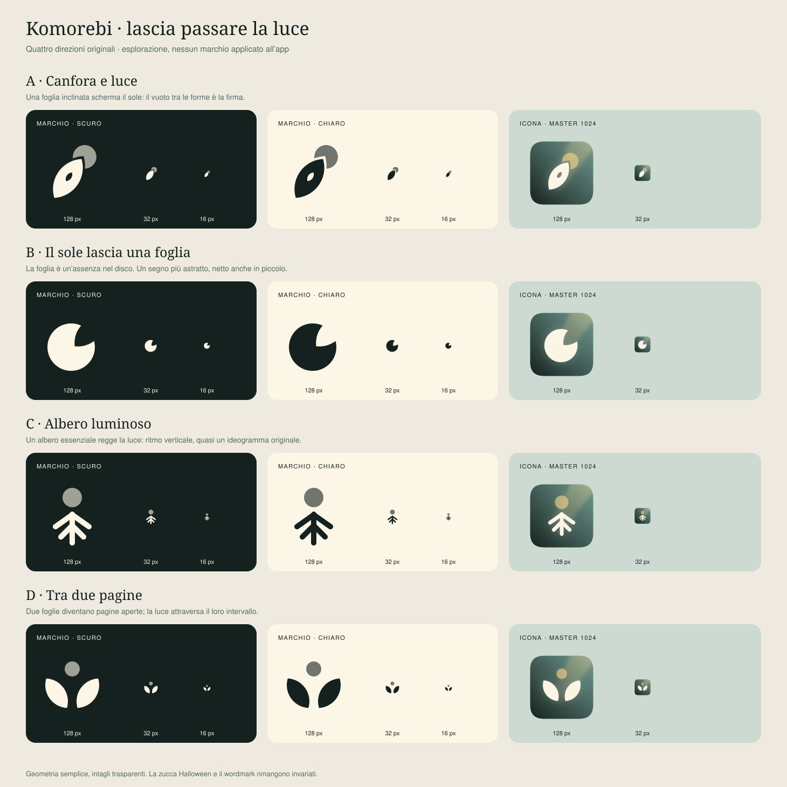

Per giudicare le misure reali apri la tavola SVG al 100%: il ridimensionamento della pagina può alterare le dimensioni mostrate. A: canfora e luce · B: sole con intaglio a foglia · C: albero luminoso · D: pagine-foglie.
Proposte, non icone installate. Scegli A, B, C o D per la fase di implementazione.